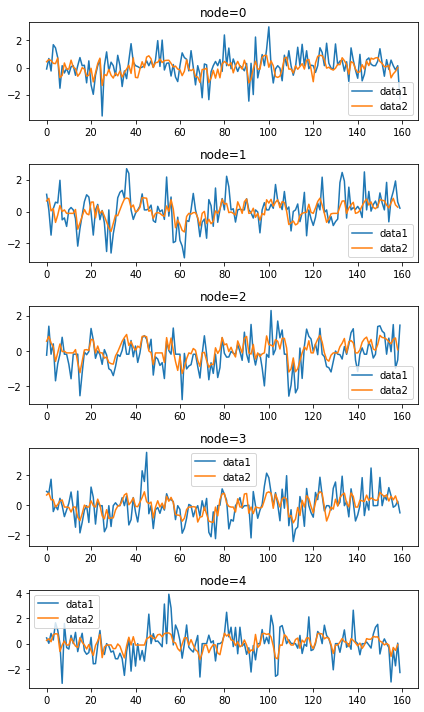
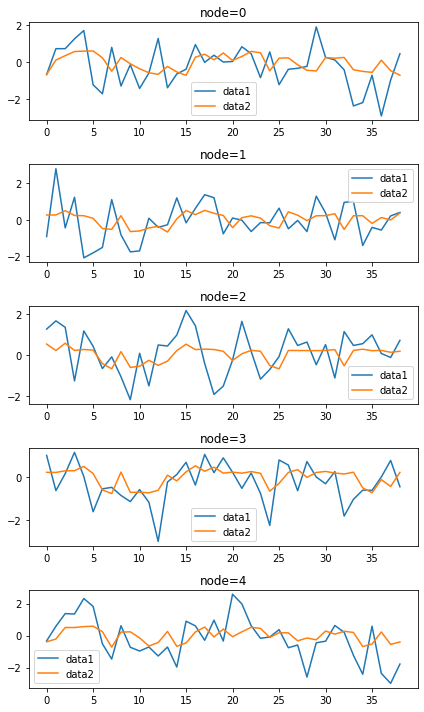
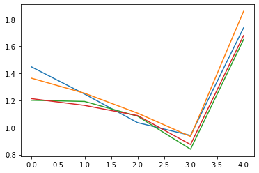
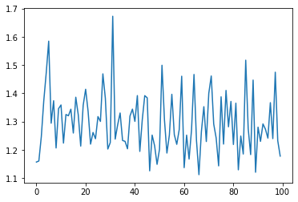
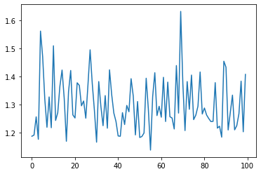
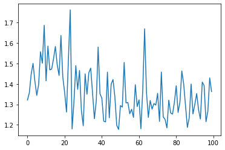

import rpy2
import rpy2.robjects as ro
from rpy2.robjects.vectors import FloatVector
from rpy2.robjects.packages import importr
import torch
import numpy as np
from tqdm import tqdm
import torch.nn.functional as F
from torch_geometric_temporal.nn.recurrent import GConvGRU
import matplotlib.pyplot as plt
import pandas as pd
import time
from scipy.interpolate import interp1dClass
import
class RecurrentGCN(torch.nn.Module):
def __init__(self, node_features, filters):
super(RecurrentGCN, self).__init__()
self.recurrent = GConvGRU(node_features, filters, 2)
self.linear = torch.nn.Linear(filters, 1)
def forward(self, x, edge_index, edge_weight):
h = self.recurrent(x, edge_index, edge_weight)
h = F.relu(h)
h = self.linear(h)
return h시간 측정 방법
t1= time.time()
for epoc in range(1000):
## 1
yhat = net(x)
## 2
loss = loss_fn(yhat,y)
## 3
loss.backward()
## 4
optimizr.step()
optimizr.zero_grad()
t2 = time.time()
t2-t1R
%load_ext rpy2.ipython%%R
library(GNAR)
library(igraph)R[write to console]: Loading required package: igraph
R[write to console]:
Attaching package: ‘igraph’
R[write to console]: The following objects are masked from ‘package:stats’:
decompose, spectrum
R[write to console]: The following object is masked from ‘package:base’:
union
R[write to console]: Loading required package: wordcloud
R[write to console]: Loading required package: RColorBrewer
Data
%%R
edges <- as.matrix(fiveNet)
data("fiveNode")%R -o fiveVTS
%R -o edges- node: 5
- time 200
functions
def vis(spatiotemporaldata):
N = spatiotemporaldata.shape[1]
fig, ax = plt.subplots(N,1)
for n in range(N):
ax[n].plot(spatiotemporaldata[:,n])
ax[n].set_title('node='+str(n))
#fig.set_width()
fig.set_figheight(N*2)
fig.tight_layout()
return fig def vis2(spatiotemporaldata1,spatiotemporaldata2):
N = spatiotemporaldata1.shape[1]
fig, ax = plt.subplots(N,1)
for n in range(N):
ax[n].plot(spatiotemporaldata1[:,n],label='data1')
ax[n].plot(spatiotemporaldata2[:,n],label='data2')
ax[n].set_title('node='+str(n))
ax[n].legend()
#fig.set_width()
fig.set_figheight(N*2)
fig.tight_layout()
return fig edges_tensor = torch.tensor(edges)nonzero_indices = edges_tensor.nonzero()fiveNet_edge = np.array(nonzero_indices).TT = 200
N = 5 # number of Nodes
E = fiveNet_edge
V = np.array([1,2,3,4,5])
t = np.arange(0,T)
node_features = 1edge_index = torch.tensor(E)
edge_attr = torch.tensor(np.array([1,1,1,1,1,1,1,1,1,1]),dtype=torch.float32)fiveVTS_train = fiveVTS[:int(len(fiveVTS)*0.8)]
fiveVTS_test = fiveVTS[int(len(fiveVTS)*0.8):]Random Missing Values
class Missing:
def __init__(self,df):
self.df = df
self.N = N
self.number = []
def miss(self,percent=0.5):
self.missing = self.df.copy()
self.percent = percent
for i in range(self.N):
self.seed = np.random.choice(1000,1,replace=False)
np.random.seed(self.seed)
self.number.append(np.random.choice(int(len(self.df)),int(len(self.df)*self.percent),replace=False))
self.missing[self.number[i],i] = float('nan')
def first_mean(self):
self.train_mean = self.missing.copy()
for i in range(self.N):
self.train_mean[self.number[i],i] = np.nanmean(self.missing[:,i])
def second_linear(self):
self.train_linear = pd.DataFrame(self.missing)
self.train_linear.interpolate(method='linear', inplace=True)
self.train_linear = self.train_linear.fillna(0)
self.train_linear = np.array(self.train_linear).reshape(int(len(self.df)),N)_zero = Missing(fiveVTS_train)_zero.miss(percent = 0.5)vis(_zero.missing);_zero.first_mean()vis(_zero.train_mean);_zero.second_linear()vis(np.array(_zero.train_linear).reshape(160,5));class Method:
def __init__(self,df,time):
self.df = df
self.test_data = fiveVTS_test
self.N = N
self.time = time
self.edge_index = edge_index
self.edge_attr = edge_attr
self.node_features = node_features
self.xt_test = torch.tensor(self.test_data.reshape(int(len(self.test_data)),self.N,1)[:-1,:,:]).float()
self.w = np.zeros(((self.time-1)*self.N,(self.time-1)*self.N))
self.mse = []
self.mae = []
def _weight(self):
for i in range((self.time-1)*self.N):
for j in range((self.time-1)*self.N):
if i==j :
self.w[i,j] = 0
elif np.abs(i-j) <= 1 :
self.w[i,j] = 1
def _STGCN(self):
self.df2 = torch.tensor(self.df).reshape(self.time,self.N,1).float()
self.X = self.df2[:self.time-1,:,:]
self.y = self.df2[1:,:,:]
model = RecurrentGCN(node_features=1, filters=4)
optimizer = torch.optim.Adam(model.parameters(), lr=0.01)
model.train()
for epoch in tqdm(range(50)):
for time, (xt,yt) in enumerate(zip(self.X,self.y)):
y_hat = model(xt, edge_index, edge_attr)
cost = torch.mean((y_hat-yt)**2)
cost.backward()
optimizer.step()
optimizer.zero_grad()
self.train_result = torch.stack([model(xt, edge_index, edge_attr) for xt in self.X]).detach().numpy()
self.test_result = torch.stack([model(xt, edge_index, edge_attr) for xt in self.xt_test]).detach().numpy()
for i in range(self.N):
self.mse.append(np.mean((self.test_data[1:,i] - self.test_result.reshape(int(len(self.xt_test)),self.N)[:,i])**2))
for i in range(self.N):
self.mae.append(np.mean(np.abs(self.test_data[1:,i] - self.test_result.reshape(int(len(self.xt_test)),self.N)[:,i])))
def FT(self):
self._weight()
self._STGCN()
self.d = np.array(self.w.sum(axis=1))
self.D = np.diag(self.d)
self.L = np.array(np.diag(1/np.sqrt(self.d)) @ (self.D-self.w) @ np.diag(1/np.sqrt(self.d)))
self.lamb, self.Psi = np.linalg.eigh(self.L)
self.Lamb = np.diag(self.lamb)
self.fhatbar = self.Psi.T @ self.train_result.reshape((self.time-1)*self.N,1)
ebayesthresh = importr('EbayesThresh').ebayesthresh
self.fhatbar_threshed = ebayesthresh(FloatVector(self.fhatbar))
self.fhatbarhat = self.Psi @ self.fhatbar_threshed
self.FT_result = self.fhatbarhat.reshape((self.time-1),self.N,1)missing: 50%
Mean
mean result
vis(_zero.train_mean);_two = Method(_zero.train_mean,160)_two.FT()100%|██████████| 50/50 [00:26<00:00, 1.88it/s]ST-GCN
vis2(fiveVTS_test[1:],_two.test_result);vis2(_zero.train_mean,_two.train_result);Ebayes result
plt.plot(_two.fhatbar)
plt.plot(_two.fhatbar_threshed)Inverse FT result
vis2(_zero.train_mean,_two.FT_result.reshape(159,5));_three = Method(_two.FT_result,159)_three.FT()100%|██████████| 50/50 [00:26<00:00, 1.89it/s]ST-GCN
vis2(fiveVTS_test[1:],_three.test_result);vis2(_zero.train_mean,_three.train_result);Ebayes result
plt.plot(_three.fhatbar)
plt.plot(_three.fhatbar_threshed)Inverse FT result
vis2(_zero.train_mean,_three.FT_result.reshape(158,5));pd.DataFrame({'1':_two.mse,'2':_three.mse})| 1 | 2 | |
|---|---|---|
| 0 | 1.127840 | 1.185874 |
| 1 | 1.136627 | 1.239555 |
| 2 | 1.041937 | 1.024299 |
| 3 | 0.873353 | 0.793870 |
| 4 | 1.581547 | 1.532444 |
pd.DataFrame({'1':_two.mae,'2':_three.mae})| 1 | 2 | |
|---|---|---|
| 0 | 0.810725 | 0.833354 |
| 1 | 0.859093 | 0.889160 |
| 2 | 0.832850 | 0.847244 |
| 3 | 0.736444 | 0.699711 |
| 4 | 1.014850 | 1.000413 |
Linear
vis(np.array(_zero.train_linear).reshape(160,5));__two = Method(_zero.train_linear,160)__two.FT()100%|██████████| 50/50 [00:26<00:00, 1.87it/s]ST-GCN
vis2(fiveVTS_test[1:],__two.test_result);vis2(_zero.train_linear,__two.train_result);Ebayes result
plt.plot(__two.fhatbar)
plt.plot(__two.fhatbar_threshed)Inverse FT result
vis2(_zero.train_mean,__two.FT_result.reshape(159,5));__three = Method(__two.FT_result,159)__three.FT()100%|██████████| 50/50 [00:26<00:00, 1.90it/s]ST-GCN
vis2(fiveVTS_test[1:],__three.test_result);vis2(_zero.train_linear,__three.train_result);Ebayes result
plt.plot(__three.fhatbar)
plt.plot(__three.fhatbar_threshed)Inverse FT result
vis2(_zero.train_mean,__three.FT_result.reshape(158,5));pd.DataFrame({'1':__two.mse,'2':__three.mse})| 1 | 2 | |
|---|---|---|
| 0 | 1.281765 | 1.400721 |
| 1 | 1.486607 | 1.592832 |
| 2 | 1.113505 | 1.165222 |
| 3 | 0.940647 | 0.923844 |
| 4 | 1.392708 | 1.508399 |
pd.DataFrame({'1':__two.mae,'2':__three.mae})| 1 | 2 | |
|---|---|---|
| 0 | 0.900372 | 0.917123 |
| 1 | 0.958798 | 1.001564 |
| 2 | 0.877698 | 0.912896 |
| 3 | 0.777983 | 0.791293 |
| 4 | 0.959073 | 1.004081 |
missing : 40%
__zero = Missing(fiveVTS_train)__zero.miss(percent = 0.4)__zero.first_mean()__zero.second_linear()Mean
_two1 = Method(__zero.train_mean,160)_two1.FT()100%|██████████| 50/50 [00:26<00:00, 1.89it/s]ST-GCN
vis2(fiveVTS_test[1:],_two1.test_result);vis2(_zero.train_mean,_two1.train_result);Ebayes result
plt.plot(_two1.fhatbar)
plt.plot(_two1.fhatbar_threshed)Inverse FT result
vis2(_zero.train_mean,_two1.FT_result.reshape(159,5));_three1 = Method(_two1.FT_result,159)_three1.FT()100%|██████████| 50/50 [00:26<00:00, 1.88it/s]ST-GCN
vis2(fiveVTS_test[1:],_three1.test_result);vis2(_zero.train_mean,_three1.train_result);Ebayes result
plt.plot(_three1.fhatbar)
plt.plot(_three1.fhatbar_threshed)Inverse FT result
vis2(_zero.train_mean,_three1.FT_result.reshape(158,5));_four1 = Method(_three1.FT_result,158)_four1.FT()100%|██████████| 50/50 [00:26<00:00, 1.90it/s]ST-GCN
vis2(fiveVTS_test[1:],_four1.test_result);vis2(_zero.train_mean,_four1.train_result);Ebayes result
plt.plot(_four1.fhatbar)
plt.plot(_four1.fhatbar_threshed)Inverse FT result
vis2(_zero.train_mean,_four1.FT_result.reshape(157,5));_five1 = Method(_four1.FT_result,157)_five1.FT()100%|██████████| 50/50 [00:26<00:00, 1.91it/s]pd.DataFrame({'1':_two1.mse,'2':_three1.mse,'3':_four1.mse,'4':_five1.mse})| 1 | 2 | 3 | 4 | |
|---|---|---|---|---|
| 0 | 1.168309 | 1.230553 | 1.192988 | 1.175019 |
| 1 | 1.066498 | 1.276368 | 1.177094 | 1.171697 |
| 2 | 1.010410 | 1.012038 | 1.015355 | 1.067709 |
| 3 | 0.778463 | 0.888485 | 0.769993 | 0.772112 |
| 4 | 1.423373 | 1.625111 | 1.490132 | 1.584657 |
plt.plot(pd.DataFrame({'1':_two1.mse,'2':_three1.mse,'3':_four1.mse,'4':_five1.mse}))
pd.DataFrame({'1':_two1.mae,'2':_three1.mae,'3':_four1.mae,'4':_five1.mae})| 1 | 2 | 3 | 4 | |
|---|---|---|---|---|
| 0 | 0.799169 | 0.864659 | 0.826029 | 0.829156 |
| 1 | 0.850051 | 0.903948 | 0.878605 | 0.868525 |
| 2 | 0.861471 | 0.824245 | 0.852739 | 0.869433 |
| 3 | 0.678440 | 0.752933 | 0.675502 | 0.674261 |
| 4 | 0.986608 | 1.034750 | 0.997042 | 1.016092 |
vis2(fiveVTS_test[1:],_two1.test_result);vis2(fiveVTS_test[1:],_three1.test_result);vis2(fiveVTS_test[1:],_four1.test_result);vis2(fiveVTS_test[1:],_five1.test_result);Linear
__two1 = Method(__zero.train_linear,160)__two1.FT()100%|██████████| 50/50 [00:27<00:00, 1.85it/s]__three1 = Method(__two1.FT_result,159)__three1.FT()100%|██████████| 50/50 [00:26<00:00, 1.88it/s]__four1 = Method(__three1.FT_result,158)__four1.FT()100%|██████████| 50/50 [00:26<00:00, 1.89it/s]__five1 = Method(__four1.FT_result,157)__five1.FT()100%|██████████| 50/50 [00:26<00:00, 1.91it/s]pd.DataFrame({'1':__two1.mse,'2':__three1.mse,'3':__four1.mse,'4':__five1.mse})| 1 | 2 | 3 | 4 | |
|---|---|---|---|---|
| 0 | 1.322930 | 1.515256 | 1.433440 | 1.285924 |
| 1 | 1.392571 | 1.781884 | 1.672098 | 1.457686 |
| 2 | 1.064279 | 1.333298 | 1.263279 | 1.111698 |
| 3 | 0.850177 | 0.953438 | 0.938495 | 0.894633 |
| 4 | 1.383176 | 1.599101 | 1.574063 | 1.538558 |
plt.plot(pd.DataFrame({'1':__two1.mse,'2':__three1.mse,'3':__four1.mse,'4':__five1.mse}))
pd.DataFrame({'1':__two1.mae,'2':__three1.mae,'3':__four1.mae,'4':__five1.mae})| 1 | 2 | 3 | 4 | |
|---|---|---|---|---|
| 0 | 0.898631 | 0.958182 | 0.948353 | 0.867740 |
| 1 | 0.929860 | 1.050781 | 1.015666 | 0.972589 |
| 2 | 0.854576 | 0.975453 | 0.945135 | 0.883765 |
| 3 | 0.733181 | 0.808303 | 0.797947 | 0.770136 |
| 4 | 0.957883 | 1.028632 | 1.034039 | 1.012992 |
vis2(fiveVTS_test[1:],__two1.test_result);vis2(fiveVTS_test[1:],__three1.test_result);vis2(fiveVTS_test[1:],__four1.test_result);vis2(fiveVTS_test[1:],__five1.test_result);missing : 70%
____zero = Missing(fiveVTS_train)____zero.miss(percent = 0.7)____zero.first_mean()____zero.second_linear()Mean
_two3 = Method(____zero.train_mean,160)_two3.FT()100%|██████████| 50/50 [00:26<00:00, 1.88it/s]_three3 = Method(_two3.FT_result,159)_three3.FT()100%|██████████| 50/50 [00:26<00:00, 1.88it/s]_four3 = Method(_three3.FT_result,158)_four3.FT()100%|██████████| 50/50 [00:26<00:00, 1.89it/s]_five3 = Method(_four3.FT_result,157)_five3.FT()100%|██████████| 50/50 [00:26<00:00, 1.90it/s]pd.DataFrame({'1':_two3.mse,'2':_three3.mse,'3':_four3.mse,'4':_five3.mse})| 1 | 2 | 3 | 4 | |
|---|---|---|---|---|
| 0 | 1.448017 | 1.364855 | 1.201664 | 1.213758 |
| 1 | 1.247535 | 1.253670 | 1.192967 | 1.163686 |
| 2 | 1.036282 | 1.106526 | 1.083865 | 1.088754 |
| 3 | 0.941918 | 0.934027 | 0.839766 | 0.874371 |
| 4 | 1.737001 | 1.859111 | 1.650749 | 1.680171 |
plt.plot(pd.DataFrame({'1':_two3.mse,'2':_three3.mse,'3':_four3.mse,'4':_five3.mse}))
pd.DataFrame({'1':_two3.mae,'2':_three3.mae,'3':_four3.mae,'4':_five3.mae})| 1 | 2 | 3 | 4 | |
|---|---|---|---|---|
| 0 | 0.927395 | 0.927923 | 0.854297 | 0.858955 |
| 1 | 0.887239 | 0.895229 | 0.885876 | 0.882910 |
| 2 | 0.821978 | 0.853594 | 0.863880 | 0.855449 |
| 3 | 0.752587 | 0.759081 | 0.719327 | 0.727041 |
| 4 | 1.087924 | 1.113979 | 1.056868 | 1.065154 |
vis2(fiveVTS_test[1:],_two3.test_result);vis2(fiveVTS_test[1:],_three3.test_result);vis2(fiveVTS_test[1:],_four3.test_result);vis2(fiveVTS_test[1:],_five3.test_result);Linear
__two3 = Method(____zero.train_linear,160)__two3.FT()100%|██████████| 50/50 [00:26<00:00, 1.86it/s]__three3 = Method(__two3.FT_result,159)__three3.FT()100%|██████████| 50/50 [00:26<00:00, 1.87it/s]__four3 = Method(__three3.FT_result,158)__four3.FT()100%|██████████| 50/50 [00:26<00:00, 1.86it/s]__five3 = Method(__four3.FT_result,157)__five3.FT()100%|██████████| 50/50 [00:26<00:00, 1.89it/s]pd.DataFrame({'1':__two3.mse,'2':__three3.mse,'3':__four3.mse,'4':__five3.mse})| 1 | 2 | 3 | 4 | |
|---|---|---|---|---|
| 0 | 1.606461 | 1.560883 | 1.545523 | 1.497282 |
| 1 | 1.847612 | 1.941934 | 1.835855 | 1.759470 |
| 2 | 1.330572 | 1.329310 | 1.316518 | 1.261980 |
| 3 | 1.027761 | 0.999007 | 0.997890 | 1.029145 |
| 4 | 1.625325 | 1.592073 | 1.593470 | 1.626432 |
plt.plot(pd.DataFrame({'1':__two3.mse,'2':__three3.mse,'3':__four3.mse,'4':__five3.mse}).iloc[:,:3])
plt.plot(pd.DataFrame({'1':__two3.mse,'2':__three3.mse,'3':__four3.mse,'4':__five3.mse}).iloc[:,3:],'r')
missing : 10%
___zero = Missing(fiveVTS_train)___zero.miss(percent = 0.1)___zero.first_mean()___zero.second_linear()Mean
_two2 = Method(___zero.train_mean,160)_two2.FT()100%|██████████| 50/50 [00:26<00:00, 1.88it/s]_three2 = Method(_two2.FT_result,159)_three2.FT()100%|██████████| 50/50 [00:26<00:00, 1.89it/s]_four2 = Method(_three2.FT_result,158)_four2.FT()100%|██████████| 50/50 [00:26<00:00, 1.90it/s]pd.DataFrame({'1':_two2.mse,'2':_three2.mse,'3':_four2.mse})| 1 | 2 | 3 | |
|---|---|---|---|
| 0 | 1.137904 | 1.157075 | 1.192053 |
| 1 | 1.167234 | 1.250587 | 1.265843 |
| 2 | 1.062204 | 0.993897 | 0.995095 |
| 3 | 0.779682 | 0.814248 | 0.823841 |
| 4 | 1.362454 | 1.477629 | 1.510099 |
plt.plot(pd.DataFrame({'1':_two2.mse,'2':_three2.mse,'3':_four2.mse}))
Linear
__two2 = Method(__zero.train_linear,160)__two2.FT()100%|██████████| 50/50 [00:26<00:00, 1.86it/s]__three2 = Method(__two2.FT_result,159)__three2.FT()100%|██████████| 50/50 [00:26<00:00, 1.86it/s]__four2 = Method(__three2.FT_result,158)__four2.FT()100%|██████████| 50/50 [00:26<00:00, 1.91it/s]pd.DataFrame({'1':__two2.mse,'2':__three2.mse,'3':__four2.mse})| 1 | 2 | 3 | |
|---|---|---|---|
| 0 | 1.276037 | 1.489909 | 1.427462 |
| 1 | 1.454765 | 1.681969 | 1.715689 |
| 2 | 1.104015 | 1.232047 | 1.253699 |
| 3 | 0.899755 | 0.944587 | 0.947889 |
| 4 | 1.403635 | 1.535966 | 1.551348 |
plt.plot(pd.DataFrame({'1':__two2.mse,'2':__three2.mse,'3':__four2.mse}))
missing 50%, 100번 반복 -> 30분 정도 걸림!
mean
t1= time.time()
ttt = 160
_mse = []
_mae = []
b = _zero.train_mean
for i in range(100):
a = Method(b,ttt)
a.FT()
_mse.append(a.mse)
_mae.append(a.mae)
ttt -= 1
b = a.FT_result
t2 = time.time()
t2-t1100%|██████████| 50/50 [00:26<00:00, 1.88it/s]
100%|██████████| 50/50 [00:26<00:00, 1.87it/s]
100%|██████████| 50/50 [00:26<00:00, 1.89it/s]
100%|██████████| 50/50 [00:26<00:00, 1.91it/s]
100%|██████████| 50/50 [00:26<00:00, 1.92it/s]
100%|██████████| 50/50 [00:26<00:00, 1.91it/s]
100%|██████████| 50/50 [00:25<00:00, 1.93it/s]
100%|██████████| 50/50 [00:25<00:00, 1.94it/s]
100%|██████████| 50/50 [00:25<00:00, 1.95it/s]
100%|██████████| 50/50 [00:25<00:00, 1.95it/s]
100%|██████████| 50/50 [00:25<00:00, 1.97it/s]
100%|██████████| 50/50 [00:24<00:00, 2.01it/s]
100%|██████████| 50/50 [00:24<00:00, 2.01it/s]
100%|██████████| 50/50 [00:24<00:00, 2.04it/s]
100%|██████████| 50/50 [00:24<00:00, 2.02it/s]
100%|██████████| 50/50 [00:24<00:00, 2.04it/s]
100%|██████████| 50/50 [00:24<00:00, 2.06it/s]
100%|██████████| 50/50 [00:24<00:00, 2.07it/s]
100%|██████████| 50/50 [00:23<00:00, 2.09it/s]
100%|██████████| 50/50 [00:23<00:00, 2.10it/s]
100%|██████████| 50/50 [00:23<00:00, 2.11it/s]
100%|██████████| 50/50 [00:23<00:00, 2.14it/s]
100%|██████████| 50/50 [00:23<00:00, 2.16it/s]
100%|██████████| 50/50 [00:23<00:00, 2.16it/s]
100%|██████████| 50/50 [00:23<00:00, 2.17it/s]
100%|██████████| 50/50 [00:22<00:00, 2.19it/s]
100%|██████████| 50/50 [00:22<00:00, 2.22it/s]
100%|██████████| 50/50 [00:22<00:00, 2.25it/s]
100%|██████████| 50/50 [00:22<00:00, 2.26it/s]
100%|██████████| 50/50 [00:21<00:00, 2.28it/s]
100%|██████████| 50/50 [00:21<00:00, 2.29it/s]
100%|██████████| 50/50 [00:21<00:00, 2.31it/s]
100%|██████████| 50/50 [00:21<00:00, 2.32it/s]
100%|██████████| 50/50 [00:21<00:00, 2.35it/s]
100%|██████████| 50/50 [00:21<00:00, 2.36it/s]
100%|██████████| 50/50 [00:21<00:00, 2.38it/s]
100%|██████████| 50/50 [00:20<00:00, 2.40it/s]
100%|██████████| 50/50 [00:20<00:00, 2.42it/s]
100%|██████████| 50/50 [00:20<00:00, 2.44it/s]
100%|██████████| 50/50 [00:20<00:00, 2.46it/s]
100%|██████████| 50/50 [00:20<00:00, 2.49it/s]
100%|██████████| 50/50 [00:19<00:00, 2.51it/s]
100%|██████████| 50/50 [00:19<00:00, 2.53it/s]
100%|██████████| 50/50 [00:19<00:00, 2.56it/s]
100%|██████████| 50/50 [00:19<00:00, 2.58it/s]
100%|██████████| 50/50 [00:19<00:00, 2.59it/s]
100%|██████████| 50/50 [00:19<00:00, 2.63it/s]
100%|██████████| 50/50 [00:18<00:00, 2.64it/s]
100%|██████████| 50/50 [00:18<00:00, 2.66it/s]
100%|██████████| 50/50 [00:18<00:00, 2.70it/s]
100%|██████████| 50/50 [00:18<00:00, 2.72it/s]
100%|██████████| 50/50 [00:18<00:00, 2.73it/s]
100%|██████████| 50/50 [00:18<00:00, 2.77it/s]
100%|██████████| 50/50 [00:17<00:00, 2.79it/s]
100%|██████████| 50/50 [00:17<00:00, 2.82it/s]
100%|██████████| 50/50 [00:17<00:00, 2.85it/s]
100%|██████████| 50/50 [00:17<00:00, 2.88it/s]
100%|██████████| 50/50 [00:17<00:00, 2.92it/s]
100%|██████████| 50/50 [00:16<00:00, 2.94it/s]
100%|██████████| 50/50 [00:16<00:00, 2.97it/s]
100%|██████████| 50/50 [00:16<00:00, 3.00it/s]
100%|██████████| 50/50 [00:16<00:00, 3.04it/s]
100%|██████████| 50/50 [00:16<00:00, 3.06it/s]
100%|██████████| 50/50 [00:16<00:00, 3.09it/s]
100%|██████████| 50/50 [00:16<00:00, 3.12it/s]
100%|██████████| 50/50 [00:15<00:00, 3.17it/s]
100%|██████████| 50/50 [00:15<00:00, 3.19it/s]
100%|██████████| 50/50 [00:15<00:00, 3.26it/s]
100%|██████████| 50/50 [00:15<00:00, 3.27it/s]
100%|██████████| 50/50 [00:15<00:00, 3.30it/s]
100%|██████████| 50/50 [00:14<00:00, 3.35it/s]
100%|██████████| 50/50 [00:14<00:00, 3.38it/s]
100%|██████████| 50/50 [00:14<00:00, 3.43it/s]
100%|██████████| 50/50 [00:14<00:00, 3.47it/s]
100%|██████████| 50/50 [00:14<00:00, 3.50it/s]
100%|██████████| 50/50 [00:14<00:00, 3.53it/s]
100%|██████████| 50/50 [00:13<00:00, 3.60it/s]
100%|██████████| 50/50 [00:13<00:00, 3.64it/s]
100%|██████████| 50/50 [00:13<00:00, 3.68it/s]
100%|██████████| 50/50 [00:13<00:00, 3.74it/s]
100%|██████████| 50/50 [00:13<00:00, 3.76it/s]
100%|██████████| 50/50 [00:13<00:00, 3.81it/s]
100%|██████████| 50/50 [00:12<00:00, 3.87it/s]
100%|██████████| 50/50 [00:12<00:00, 3.92it/s]
100%|██████████| 50/50 [00:12<00:00, 3.94it/s]
100%|██████████| 50/50 [00:12<00:00, 4.02it/s]
100%|██████████| 50/50 [00:12<00:00, 4.06it/s]
100%|██████████| 50/50 [00:12<00:00, 4.11it/s]
100%|██████████| 50/50 [00:11<00:00, 4.18it/s]
100%|██████████| 50/50 [00:11<00:00, 4.22it/s]
100%|██████████| 50/50 [00:11<00:00, 4.28it/s]
100%|██████████| 50/50 [00:11<00:00, 4.34it/s]
100%|██████████| 50/50 [00:11<00:00, 4.41it/s]
100%|██████████| 50/50 [00:11<00:00, 4.48it/s]
100%|██████████| 50/50 [00:10<00:00, 4.56it/s]
100%|██████████| 50/50 [00:10<00:00, 4.62it/s]
100%|██████████| 50/50 [00:10<00:00, 4.70it/s]
100%|██████████| 50/50 [00:10<00:00, 4.77it/s]
100%|██████████| 50/50 [00:10<00:00, 4.85it/s]
100%|██████████| 50/50 [00:10<00:00, 4.91it/s]1912.6949224472046mean_mse100 = pd.DataFrame(_mse)plt.plot(mean_mse100.T)plt.plot(mean_mse100[0])
mean_mae100 = pd.DataFrame(_mae)plt.plot(mean_mae100.T)linear
t1= time.time()
ttt = 160
_mse = []
_mae = []
b = _zero.train_linear
for i in range(100):
a = Method(b,ttt)
a.FT()
_mse.append(a.mse)
_mae.append(a.mae)
ttt -= 1
b = a.FT_result
t2 = time.time()
t2-t1100%|██████████| 50/50 [00:27<00:00, 1.85it/s]
100%|██████████| 50/50 [00:26<00:00, 1.87it/s]
100%|██████████| 50/50 [00:26<00:00, 1.87it/s]
100%|██████████| 50/50 [00:26<00:00, 1.89it/s]
100%|██████████| 50/50 [00:26<00:00, 1.92it/s]
100%|██████████| 50/50 [00:26<00:00, 1.91it/s]
100%|██████████| 50/50 [00:26<00:00, 1.92it/s]
100%|██████████| 50/50 [00:25<00:00, 1.95it/s]
100%|██████████| 50/50 [00:25<00:00, 1.97it/s]
100%|██████████| 50/50 [00:25<00:00, 1.97it/s]
100%|██████████| 50/50 [00:25<00:00, 1.98it/s]
100%|██████████| 50/50 [00:25<00:00, 1.99it/s]
100%|██████████| 50/50 [00:24<00:00, 2.01it/s]
100%|██████████| 50/50 [00:24<00:00, 2.02it/s]
100%|██████████| 50/50 [00:24<00:00, 2.02it/s]
100%|██████████| 50/50 [00:24<00:00, 2.05it/s]
100%|██████████| 50/50 [00:24<00:00, 2.07it/s]
100%|██████████| 50/50 [00:24<00:00, 2.07it/s]
100%|██████████| 50/50 [00:23<00:00, 2.09it/s]
100%|██████████| 50/50 [00:23<00:00, 2.11it/s]
100%|██████████| 50/50 [00:23<00:00, 2.13it/s]
100%|██████████| 50/50 [00:23<00:00, 2.16it/s]
100%|██████████| 50/50 [00:23<00:00, 2.16it/s]
100%|██████████| 50/50 [00:23<00:00, 2.17it/s]
100%|██████████| 50/50 [00:22<00:00, 2.19it/s]
100%|██████████| 50/50 [00:22<00:00, 2.20it/s]
100%|██████████| 50/50 [00:22<00:00, 2.21it/s]
100%|██████████| 50/50 [00:22<00:00, 2.24it/s]
100%|██████████| 50/50 [00:22<00:00, 2.26it/s]
100%|██████████| 50/50 [00:22<00:00, 2.27it/s]
100%|██████████| 50/50 [00:21<00:00, 2.29it/s]
100%|██████████| 50/50 [00:21<00:00, 2.32it/s]
100%|██████████| 50/50 [00:21<00:00, 2.33it/s]
100%|██████████| 50/50 [00:21<00:00, 2.35it/s]
100%|██████████| 50/50 [00:21<00:00, 2.37it/s]
100%|██████████| 50/50 [00:20<00:00, 2.38it/s]
100%|██████████| 50/50 [00:20<00:00, 2.40it/s]
100%|██████████| 50/50 [00:20<00:00, 2.44it/s]
100%|██████████| 50/50 [00:20<00:00, 2.45it/s]
100%|██████████| 50/50 [00:20<00:00, 2.45it/s]
100%|██████████| 50/50 [00:19<00:00, 2.50it/s]
100%|██████████| 50/50 [00:19<00:00, 2.51it/s]
100%|██████████| 50/50 [00:19<00:00, 2.53it/s]
100%|██████████| 50/50 [00:19<00:00, 2.56it/s]
100%|██████████| 50/50 [00:19<00:00, 2.58it/s]
100%|██████████| 50/50 [00:19<00:00, 2.62it/s]
100%|██████████| 50/50 [00:18<00:00, 2.64it/s]
100%|██████████| 50/50 [00:18<00:00, 2.65it/s]
100%|██████████| 50/50 [00:18<00:00, 2.70it/s]
100%|██████████| 50/50 [00:18<00:00, 2.72it/s]
100%|██████████| 50/50 [00:18<00:00, 2.72it/s]
100%|██████████| 50/50 [00:18<00:00, 2.76it/s]
100%|██████████| 50/50 [00:18<00:00, 2.78it/s]
100%|██████████| 50/50 [00:17<00:00, 2.80it/s]
100%|██████████| 50/50 [00:17<00:00, 2.83it/s]
100%|██████████| 50/50 [00:17<00:00, 2.85it/s]
100%|██████████| 50/50 [00:17<00:00, 2.87it/s]
100%|██████████| 50/50 [00:17<00:00, 2.92it/s]
100%|██████████| 50/50 [00:17<00:00, 2.92it/s]
100%|██████████| 50/50 [00:16<00:00, 2.95it/s]
100%|██████████| 50/50 [00:16<00:00, 2.98it/s]
100%|██████████| 50/50 [00:16<00:00, 3.01it/s]
100%|██████████| 50/50 [00:16<00:00, 3.03it/s]
100%|██████████| 50/50 [00:16<00:00, 3.07it/s]
100%|██████████| 50/50 [00:16<00:00, 3.10it/s]
100%|██████████| 50/50 [00:15<00:00, 3.14it/s]
100%|██████████| 50/50 [00:15<00:00, 3.17it/s]
100%|██████████| 50/50 [00:15<00:00, 3.20it/s]
100%|██████████| 50/50 [00:15<00:00, 3.23it/s]
100%|██████████| 50/50 [00:15<00:00, 3.26it/s]
100%|██████████| 50/50 [00:14<00:00, 3.35it/s]
100%|██████████| 50/50 [00:14<00:00, 3.40it/s]
100%|██████████| 50/50 [00:14<00:00, 3.43it/s]
100%|██████████| 50/50 [00:14<00:00, 3.48it/s]
100%|██████████| 50/50 [00:14<00:00, 3.52it/s]
100%|██████████| 50/50 [00:14<00:00, 3.56it/s]
100%|██████████| 50/50 [00:14<00:00, 3.52it/s]
100%|██████████| 50/50 [00:13<00:00, 3.60it/s]
100%|██████████| 50/50 [00:13<00:00, 3.64it/s]
100%|██████████| 50/50 [00:13<00:00, 3.70it/s]
100%|██████████| 50/50 [00:13<00:00, 3.74it/s]
100%|██████████| 50/50 [00:13<00:00, 3.80it/s]
100%|██████████| 50/50 [00:13<00:00, 3.84it/s]
100%|██████████| 50/50 [00:12<00:00, 3.89it/s]
100%|██████████| 50/50 [00:12<00:00, 3.94it/s]
100%|██████████| 50/50 [00:12<00:00, 3.99it/s]
100%|██████████| 50/50 [00:12<00:00, 4.04it/s]
100%|██████████| 50/50 [00:12<00:00, 4.09it/s]
100%|██████████| 50/50 [00:12<00:00, 4.15it/s]
100%|██████████| 50/50 [00:11<00:00, 4.22it/s]
100%|██████████| 50/50 [00:11<00:00, 4.27it/s]
100%|██████████| 50/50 [00:11<00:00, 4.34it/s]
100%|██████████| 50/50 [00:11<00:00, 4.38it/s]
100%|██████████| 50/50 [00:11<00:00, 4.47it/s]
100%|██████████| 50/50 [00:11<00:00, 4.54it/s]
100%|██████████| 50/50 [00:10<00:00, 4.61it/s]
100%|██████████| 50/50 [00:10<00:00, 4.67it/s]
100%|██████████| 50/50 [00:10<00:00, 4.77it/s]
100%|██████████| 50/50 [00:10<00:00, 4.85it/s]
100%|██████████| 50/50 [00:10<00:00, 4.91it/s]1914.069603919983linear_mse100 = pd.DataFrame(_mse)plt.plot(linear_mse100.T)plt.plot(linear_mse100[0])
linear_mae100 = pd.DataFrame(_mae)plt.plot(linear_mae100.T)missing 40%, 100번 반복
mean
t1= time.time()
ttt = 160
_mse = []
_mae = []
b = __zero.train_mean
for i in range(100):
a = Method(b,ttt)
a.FT()
_mse.append(a.mse)
_mae.append(a.mae)
ttt -= 1
b = a.FT_result
t2 = time.time()
t2-t1100%|██████████| 50/50 [00:26<00:00, 1.85it/s]
100%|██████████| 50/50 [00:26<00:00, 1.86it/s]
100%|██████████| 50/50 [00:26<00:00, 1.87it/s]
100%|██████████| 50/50 [00:26<00:00, 1.90it/s]
100%|██████████| 50/50 [00:26<00:00, 1.91it/s]
100%|██████████| 50/50 [00:25<00:00, 1.92it/s]
100%|██████████| 50/50 [00:25<00:00, 1.95it/s]
100%|██████████| 50/50 [00:25<00:00, 1.96it/s]
100%|██████████| 50/50 [00:25<00:00, 1.97it/s]
100%|██████████| 50/50 [00:25<00:00, 1.97it/s]
100%|██████████| 50/50 [00:25<00:00, 1.98it/s]
100%|██████████| 50/50 [00:25<00:00, 1.98it/s]
100%|██████████| 50/50 [00:25<00:00, 2.00it/s]
100%|██████████| 50/50 [00:24<00:00, 2.01it/s]
100%|██████████| 50/50 [00:24<00:00, 2.02it/s]
100%|██████████| 50/50 [00:24<00:00, 2.05it/s]
100%|██████████| 50/50 [00:24<00:00, 2.06it/s]
100%|██████████| 50/50 [00:24<00:00, 2.07it/s]
100%|██████████| 50/50 [00:23<00:00, 2.09it/s]
100%|██████████| 50/50 [00:23<00:00, 2.11it/s]
100%|██████████| 50/50 [00:23<00:00, 2.12it/s]
100%|██████████| 50/50 [00:23<00:00, 2.14it/s]
100%|██████████| 50/50 [00:23<00:00, 2.16it/s]
100%|██████████| 50/50 [00:22<00:00, 2.20it/s]
100%|██████████| 50/50 [00:22<00:00, 2.20it/s]
100%|██████████| 50/50 [00:22<00:00, 2.20it/s]
100%|██████████| 50/50 [00:22<00:00, 2.22it/s]
100%|██████████| 50/50 [00:22<00:00, 2.24it/s]
100%|██████████| 50/50 [00:22<00:00, 2.26it/s]
100%|██████████| 50/50 [00:22<00:00, 2.27it/s]
100%|██████████| 50/50 [00:21<00:00, 2.31it/s]
100%|██████████| 50/50 [00:21<00:00, 2.34it/s]
100%|██████████| 50/50 [00:21<00:00, 2.36it/s]
100%|██████████| 50/50 [00:21<00:00, 2.33it/s]
100%|██████████| 50/50 [00:21<00:00, 2.37it/s]
100%|██████████| 50/50 [00:20<00:00, 2.39it/s]
100%|██████████| 50/50 [00:20<00:00, 2.43it/s]
100%|██████████| 50/50 [00:20<00:00, 2.42it/s]
100%|██████████| 50/50 [00:20<00:00, 2.44it/s]
100%|██████████| 50/50 [00:20<00:00, 2.46it/s]
100%|██████████| 50/50 [00:20<00:00, 2.48it/s]
100%|██████████| 50/50 [00:19<00:00, 2.50it/s]
100%|██████████| 50/50 [00:19<00:00, 2.54it/s]
100%|██████████| 50/50 [00:19<00:00, 2.57it/s]
100%|██████████| 50/50 [00:19<00:00, 2.59it/s]
100%|██████████| 50/50 [00:19<00:00, 2.62it/s]
100%|██████████| 50/50 [00:18<00:00, 2.64it/s]
100%|██████████| 50/50 [00:18<00:00, 2.66it/s]
100%|██████████| 50/50 [00:18<00:00, 2.68it/s]
100%|██████████| 50/50 [00:18<00:00, 2.72it/s]
100%|██████████| 50/50 [00:18<00:00, 2.74it/s]
100%|██████████| 50/50 [00:18<00:00, 2.77it/s]
100%|██████████| 50/50 [00:17<00:00, 2.78it/s]
100%|██████████| 50/50 [00:17<00:00, 2.81it/s]
100%|██████████| 50/50 [00:17<00:00, 2.84it/s]
100%|██████████| 50/50 [00:17<00:00, 2.87it/s]
100%|██████████| 50/50 [00:17<00:00, 2.89it/s]
100%|██████████| 50/50 [00:17<00:00, 2.93it/s]
100%|██████████| 50/50 [00:16<00:00, 2.94it/s]
100%|██████████| 50/50 [00:16<00:00, 2.97it/s]
100%|██████████| 50/50 [00:16<00:00, 2.98it/s]
100%|██████████| 50/50 [00:16<00:00, 3.04it/s]
100%|██████████| 50/50 [00:16<00:00, 3.07it/s]
100%|██████████| 50/50 [00:16<00:00, 3.09it/s]
100%|██████████| 50/50 [00:15<00:00, 3.15it/s]
100%|██████████| 50/50 [00:15<00:00, 3.17it/s]
100%|██████████| 50/50 [00:15<00:00, 3.20it/s]
100%|██████████| 50/50 [00:15<00:00, 3.24it/s]
100%|██████████| 50/50 [00:15<00:00, 3.27it/s]
100%|██████████| 50/50 [00:15<00:00, 3.31it/s]
100%|██████████| 50/50 [00:14<00:00, 3.35it/s]
100%|██████████| 50/50 [00:14<00:00, 3.38it/s]
100%|██████████| 50/50 [00:14<00:00, 3.44it/s]
100%|██████████| 50/50 [00:14<00:00, 3.47it/s]
100%|██████████| 50/50 [00:14<00:00, 3.51it/s]
100%|██████████| 50/50 [00:14<00:00, 3.55it/s]
100%|██████████| 50/50 [00:13<00:00, 3.60it/s]
100%|██████████| 50/50 [00:13<00:00, 3.63it/s]
100%|██████████| 50/50 [00:13<00:00, 3.69it/s]
100%|██████████| 50/50 [00:13<00:00, 3.74it/s]
100%|██████████| 50/50 [00:13<00:00, 3.77it/s]
100%|██████████| 50/50 [00:13<00:00, 3.83it/s]
100%|██████████| 50/50 [00:12<00:00, 3.86it/s]
100%|██████████| 50/50 [00:12<00:00, 3.91it/s]
100%|██████████| 50/50 [00:12<00:00, 3.99it/s]
100%|██████████| 50/50 [00:12<00:00, 4.04it/s]
100%|██████████| 50/50 [00:12<00:00, 4.08it/s]
100%|██████████| 50/50 [00:12<00:00, 4.13it/s]
100%|██████████| 50/50 [00:11<00:00, 4.21it/s]
100%|██████████| 50/50 [00:11<00:00, 4.27it/s]
100%|██████████| 50/50 [00:11<00:00, 4.33it/s]
100%|██████████| 50/50 [00:11<00:00, 4.40it/s]
100%|██████████| 50/50 [00:11<00:00, 4.46it/s]
100%|██████████| 50/50 [00:11<00:00, 4.52it/s]
100%|██████████| 50/50 [00:10<00:00, 4.61it/s]
100%|██████████| 50/50 [00:10<00:00, 4.67it/s]
100%|██████████| 50/50 [00:10<00:00, 4.73it/s]
100%|██████████| 50/50 [00:10<00:00, 4.83it/s]
100%|██████████| 50/50 [00:10<00:00, 4.89it/s]
100%|██████████| 50/50 [00:10<00:00, 4.97it/s]1907.6452867984772mean_mse100_40 = pd.DataFrame(_mse)plt.plot(mean_mse100_40.T)plt.plot(mean_mse100_40[0])
mean_mae100_40 = pd.DataFrame(_mae)plt.plot(mean_mae100_40.T)linear
t1= time.time()
ttt = 160
_mse = []
_mae = []
b = __zero.train_linear
for i in range(100):
a = Method(b,ttt)
a.FT()
_mse.append(a.mse)
_mae.append(a.mae)
ttt -= 1
b = a.FT_result
t2 = time.time()
t2-t1100%|██████████| 50/50 [00:26<00:00, 1.85it/s]
100%|██████████| 50/50 [00:26<00:00, 1.89it/s]
100%|██████████| 50/50 [00:26<00:00, 1.88it/s]
100%|██████████| 50/50 [00:26<00:00, 1.89it/s]
100%|██████████| 50/50 [00:26<00:00, 1.92it/s]
100%|██████████| 50/50 [00:25<00:00, 1.93it/s]
100%|██████████| 50/50 [00:25<00:00, 1.93it/s]
100%|██████████| 50/50 [00:25<00:00, 1.94it/s]
100%|██████████| 50/50 [00:25<00:00, 1.94it/s]
100%|██████████| 50/50 [00:25<00:00, 1.98it/s]
100%|██████████| 50/50 [00:25<00:00, 1.97it/s]
100%|██████████| 50/50 [00:25<00:00, 1.97it/s]
100%|██████████| 50/50 [00:24<00:00, 2.03it/s]
100%|██████████| 50/50 [00:24<00:00, 2.03it/s]
100%|██████████| 50/50 [00:24<00:00, 2.04it/s]
100%|██████████| 50/50 [00:24<00:00, 2.06it/s]
100%|██████████| 50/50 [00:24<00:00, 2.06it/s]
100%|██████████| 50/50 [00:23<00:00, 2.09it/s]
100%|██████████| 50/50 [00:23<00:00, 2.12it/s]
100%|██████████| 50/50 [00:23<00:00, 2.12it/s]
100%|██████████| 50/50 [00:23<00:00, 2.14it/s]
100%|██████████| 50/50 [00:23<00:00, 2.16it/s]
100%|██████████| 50/50 [00:23<00:00, 2.16it/s]
100%|██████████| 50/50 [00:22<00:00, 2.18it/s]
100%|██████████| 50/50 [00:22<00:00, 2.21it/s]
100%|██████████| 50/50 [00:22<00:00, 2.22it/s]
100%|██████████| 50/50 [00:22<00:00, 2.23it/s]
100%|██████████| 50/50 [00:22<00:00, 2.27it/s]
100%|██████████| 50/50 [00:21<00:00, 2.28it/s]
100%|██████████| 50/50 [00:21<00:00, 2.29it/s]
100%|██████████| 50/50 [00:21<00:00, 2.32it/s]
100%|██████████| 50/50 [00:21<00:00, 2.34it/s]
100%|██████████| 50/50 [00:21<00:00, 2.32it/s]
100%|██████████| 50/50 [00:21<00:00, 2.37it/s]
100%|██████████| 50/50 [00:21<00:00, 2.37it/s]
100%|██████████| 50/50 [00:20<00:00, 2.38it/s]
100%|██████████| 50/50 [00:20<00:00, 2.41it/s]
100%|██████████| 50/50 [00:20<00:00, 2.42it/s]
100%|██████████| 50/50 [00:20<00:00, 2.42it/s]
100%|██████████| 50/50 [00:20<00:00, 2.45it/s]
100%|██████████| 50/50 [00:20<00:00, 2.47it/s]
100%|██████████| 50/50 [00:20<00:00, 2.50it/s]
100%|██████████| 50/50 [00:19<00:00, 2.53it/s]
100%|██████████| 50/50 [00:19<00:00, 2.55it/s]
100%|██████████| 50/50 [00:19<00:00, 2.57it/s]
100%|██████████| 50/50 [00:19<00:00, 2.61it/s]
100%|██████████| 50/50 [00:19<00:00, 2.62it/s]
100%|██████████| 50/50 [00:18<00:00, 2.65it/s]
100%|██████████| 50/50 [00:18<00:00, 2.68it/s]
100%|██████████| 50/50 [00:18<00:00, 2.71it/s]
100%|██████████| 50/50 [00:18<00:00, 2.72it/s]
100%|██████████| 50/50 [00:18<00:00, 2.76it/s]
100%|██████████| 50/50 [00:17<00:00, 2.78it/s]
100%|██████████| 50/50 [00:17<00:00, 2.80it/s]
100%|██████████| 50/50 [00:17<00:00, 2.83it/s]
100%|██████████| 50/50 [00:17<00:00, 2.86it/s]
100%|██████████| 50/50 [00:17<00:00, 2.89it/s]
100%|██████████| 50/50 [00:17<00:00, 2.91it/s]
100%|██████████| 50/50 [00:16<00:00, 2.95it/s]
100%|██████████| 50/50 [00:16<00:00, 2.98it/s]
100%|██████████| 50/50 [00:16<00:00, 3.00it/s]
100%|██████████| 50/50 [00:16<00:00, 3.04it/s]
100%|██████████| 50/50 [00:16<00:00, 3.07it/s]
100%|██████████| 50/50 [00:16<00:00, 3.11it/s]
100%|██████████| 50/50 [00:15<00:00, 3.14it/s]
100%|██████████| 50/50 [00:15<00:00, 3.16it/s]
100%|██████████| 50/50 [00:15<00:00, 3.20it/s]
100%|██████████| 50/50 [00:15<00:00, 3.23it/s]
100%|██████████| 50/50 [00:15<00:00, 3.26it/s]
100%|██████████| 50/50 [00:15<00:00, 3.31it/s]
100%|██████████| 50/50 [00:14<00:00, 3.34it/s]
100%|██████████| 50/50 [00:14<00:00, 3.38it/s]
100%|██████████| 50/50 [00:14<00:00, 3.42it/s]
100%|██████████| 50/50 [00:14<00:00, 3.46it/s]
100%|██████████| 50/50 [00:14<00:00, 3.49it/s]
100%|██████████| 50/50 [00:14<00:00, 3.55it/s]
100%|██████████| 50/50 [00:13<00:00, 3.58it/s]
100%|██████████| 50/50 [00:13<00:00, 3.63it/s]
100%|██████████| 50/50 [00:13<00:00, 3.68it/s]
100%|██████████| 50/50 [00:13<00:00, 3.70it/s]
100%|██████████| 50/50 [00:13<00:00, 3.74it/s]
100%|██████████| 50/50 [00:13<00:00, 3.80it/s]
100%|██████████| 50/50 [00:13<00:00, 3.84it/s]
100%|██████████| 50/50 [00:12<00:00, 3.91it/s]
100%|██████████| 50/50 [00:12<00:00, 3.95it/s]
100%|██████████| 50/50 [00:12<00:00, 4.02it/s]
100%|██████████| 50/50 [00:12<00:00, 4.07it/s]
100%|██████████| 50/50 [00:12<00:00, 4.12it/s]
100%|██████████| 50/50 [00:11<00:00, 4.19it/s]
100%|██████████| 50/50 [00:11<00:00, 4.25it/s]
100%|██████████| 50/50 [00:11<00:00, 4.29it/s]
100%|██████████| 50/50 [00:11<00:00, 4.39it/s]
100%|██████████| 50/50 [00:11<00:00, 4.44it/s]
100%|██████████| 50/50 [00:11<00:00, 4.49it/s]
100%|██████████| 50/50 [00:10<00:00, 4.59it/s]
100%|██████████| 50/50 [00:10<00:00, 4.65it/s]
100%|██████████| 50/50 [00:10<00:00, 4.73it/s]
100%|██████████| 50/50 [00:10<00:00, 4.80it/s]
100%|██████████| 50/50 [00:10<00:00, 4.86it/s]
100%|██████████| 50/50 [00:10<00:00, 4.96it/s]1908.033264875412linear_mse100_40 = pd.DataFrame(_mse)plt.plot(linear_mse100_40.T)plt.plot(linear_mse100_40[0])
linear_mae100_40 = pd.DataFrame(_mae)plt.plot(linear_mae100_40.T)missing 70%, 100번 반복
mean
t1= time.time()
ttt = 160
_mse = []
_mae = []
b = ____zero.train_mean
for i in range(100):
a = Method(b,ttt)
a.FT()
_mse.append(a.mse)
_mae.append(a.mae)
ttt -= 1
b = a.FT_result
t2 = time.time()
t2-t1mean_mse100_70 = pd.DataFrame(_mse)mean_mae100_70 = pd.DataFrame(_mae)linear
t1= time.time()
ttt = 160
_mse = []
_mae = []
b = ____zero.train_linear
for i in range(100):
a = Method(b,ttt)
a.FT()
_mse.append(a.mse)
_mae.append(a.mae)
ttt -= 1
b = a.FT_result
t2 = time.time()
t2-t1linear_mse100_70 = pd.DataFrame(_mse)linear_mae100_70 = pd.DataFrame(_mae)